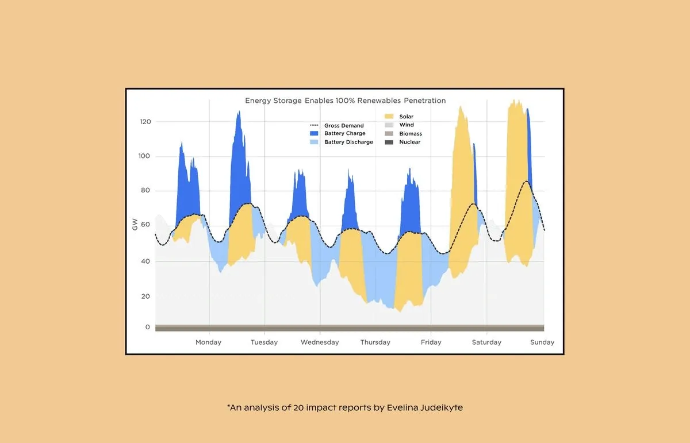
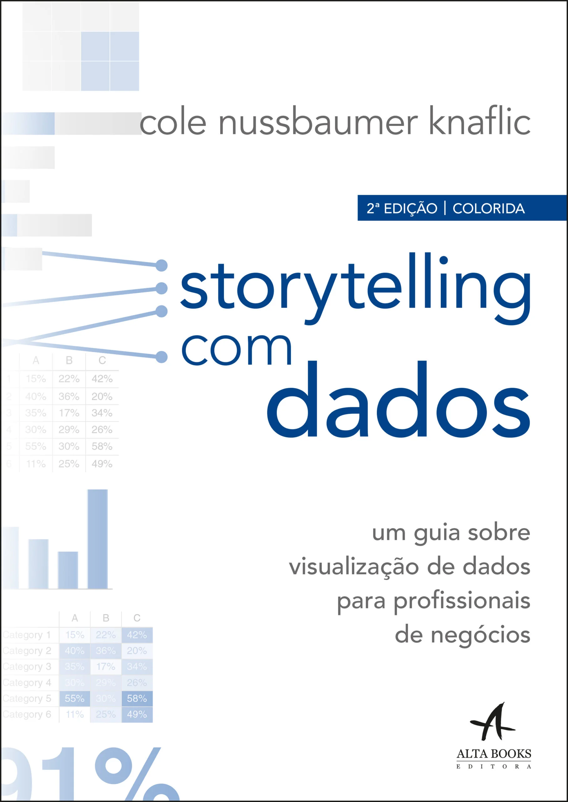

Referências
Vídeos, artigos, livros, histórias e newsletters citados nas aulas do curso.
Vídeos
How South Koreans Got So Much Taller
Vox
Usado como exemplo de "explicar → compreender": ajudar a audiência a entender as nuances de uma situação.
Ver vídeo →Quantum Computing Expert Explains One Concept in 5 Levels of Difficulty
WIRED. Usado na Aula 1 como exemplo de adaptar a mesma mensagem para diferentes níveis de audiência.
Ver vídeo →Nick Desbarats no Outlier
Nick Desbarats. Base do slide "foco na mensagem vs. foco na representação dos dados", na Aula 2.
Ver vídeo →John Burn-Murdoch no Outlier
John Burn-Murdoch, Chief Data Reporter no Financial Times. Base da citação sobre textos e anotações em gráficos, na Aula 2.
Ver vídeo →Vídeo sobre os seis arcos emocionais
Baseado em storytellingedge.substack.com. Usado na Aula 3 antes do slide sobre os seis arcos emocionais das histórias.
Ver artigo →Artigos
Advanced Climate — Future Temperatures
ClimateScience. Gráfico "Abnormal Warming", usado no slide interativo das três frases na Aula 2.
Ver artigo →Global Mean Temperature Dashboard
World Meteorological Organization (WMO). Usado no slide interativo das três frases na Aula 2.
Ver dashboard →The Last Three Years Were the Warmest in Recorded History
Statista. Usado no slide interativo das três frases na Aula 2.
Ver gráfico →

Visualising Impact
The Plot. Usado na Aula 1 como conteúdo por trás do GIF animado, antes do slide "3. O quê?".
Ver artigo →Battling Infectious Diseases in the 20th Century: The Impact of Vaccines
The Wall Street Journal, por Tynan DeBold e Dov Friedman. Usado na Aula 2 no slide com o heatmap de casos de pólio por estado.
Ver artigo →MIT neuroscientists find the brain can identify images seen for as little as 13 milliseconds
Psychonomic Society. Usado na Aula 2 no slide sobre o cérebro identificar conteúdo de imagens vistas rapidamente.
Ver artigo →Study charts change hearts and minds better than words do
The Washington Post. Base do experimento em 3 passos sobre republicanos e temperaturas globais, na Aula 2.
Ver artigo →Type Your Job to See How Much AI Will Affect It
The Washington Post. Usado como exemplo de "explorar → disponibilizar": entregar dados para a audiência tirar as próprias conclusões.
Ver reportagem →Isaac Asimov, Elon Musk and the replacement of humans by robots
Le Monde. Usado na Aula 1, eixo "interpretar", no framework de proficiência em dados.
Ver artigo →Elon Musk, J.R.R. Tolkien and a relentless cultural and political war
Le Monde. Usado na Aula 1, eixo "interpretar", no framework de proficiência em dados.
Ver artigo →Text in Data Visualizations: How to Annotate Charts and Maps
Datawrapper. Base dos slides sobre títulos, rótulos, eixos, legendas e anotações, na Aula 2.
Ver artigo →Matching sounds to shapes: Evidence of the bouba-kiki effect in naïve baby chicks
Loconsole, Benavides-Varela & Regolin — Science (2026). Usado na Aula 2 no slide sobre psicologia das formas.
Ver artigo →What to consider when choosing colors for race, ethnicity, and world regions
Datawrapper. Usado no slide "Complicou? Não sabe de nada...", na Aula 2.
Ver artigo →A detailed guide to colors in data vis style guides
Datawrapper. Usado no slide "Complicou? Não sabe de nada...", na Aula 2.
Ver artigo →10 ways to use fewer colors in your data visualizations
Datawrapper. Usado no slide "Complicou? Não sabe de nada...", na Aula 2.
Ver artigo →Remind readers of the colors in your data visualization
Datawrapper. Usado no slide "Complicou? Não sabe de nada...", na Aula 2.
Ver artigo →The emotional arcs of stories are dominated by six basic shapes
Estudo com 1327 histórias, usado na Aula 3.
Ver artigo →Regaining creativity in science: insights from conversation
Royal Society Open Science. Usado na Aula 3 no slide sobre ciência e criatividade.
Ver artigo →Creativity across domains: Thoughts in science, engineering, mathematics, computer science, technology, and art
Julio M Ottino. Usado na Aula 3 no slide sobre cubismo e mecânica quântica.
Ver artigo →Inspirações
